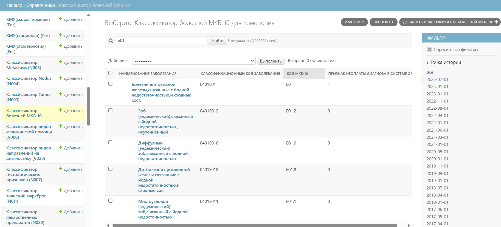
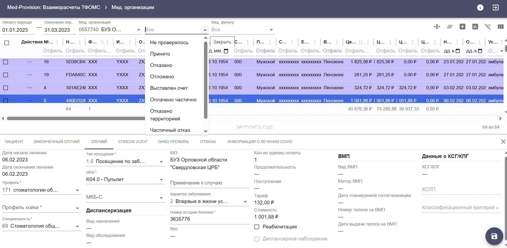
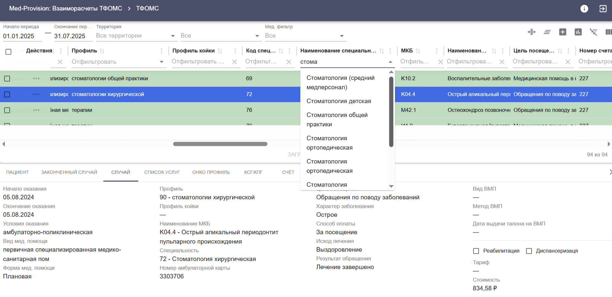

«Med-Provision»: Взаиморасчёты ТФОМС, версия 2
Программа предназначена для организации и контроля взаиморасчётов между территориальными фондами обязательного медицинского страхования (ТФОМС), а также между медицинскими организациями и ТФОМС за медицинскую помощь, оказанную гражданам по программе ОМС за пределами территории страхования.
Возможности программы
- Ведение справочной информации, импорт и экспорт справочников.
- Импорт реестров медицинской помощи, оказанной пациентам вне территории страхования (иногородние граждане, пролеченные на территории ТФОМС; застрахованные на территории и пролеченные в других субъектах РФ).
- Форматный и медико-экономический контроль реестров.
- Автоматическое формирование протокола обработки реестра счёта и файла с ошибочными записями для передачи в медицинскую организацию.
- Автоматическая проверка по ФЕРЗЛ.
- Формирование счетов и реестров счетов в разрезе территорий страхования, а также реестров с информацией о возвратах — для последующей загрузки в ГИС ОМС.
- Формирование платёжных файлов для загрузки в ГИС ОМС.
- Экспорт данных об оказанной медицинской помощи в форматах, предусмотренных приказами и письмами ФФОМС.
- Формирование различных отчётов по накопленной информации.
Интерфейс системы



Технические требования
Система разворачивается на сервере (ОС Red OS / Astra Linux, СУБД PostgreSQL 16 и выше). Пользователи работают через доступный браузер (Yandex, Firefox и др.) в рамках локальной сети.